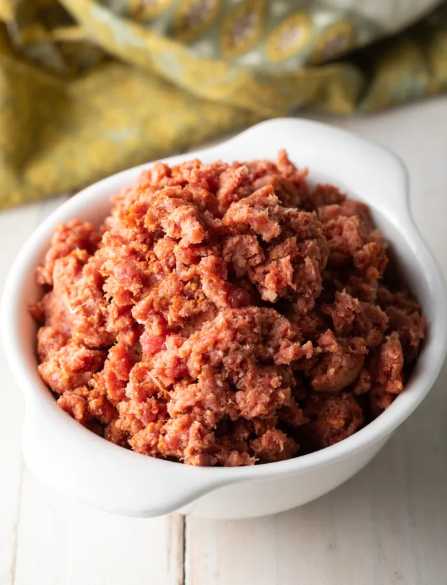

Kitfo

Description
This Ethiopian Kitfo beef tartare recipe features high-quality steak minced and combined with bold spices. Enjoy with injera and nearly any sides!
Ingredients
- 1 and 1/2 pounds beef fillet well-trimmed
- 1 tablespoon cayenne pepper
- 2 teaspoon salt
- 1 teaspoon anchovy paste
- 1 teaspoon garlic powder
- 1/2 teaspoon ground cardamom
- 1/3 cup clarified butter or ghee
Steps
- Set out a large high-powered food processor. Make sure to trim all the silver skin and fat off the fillet and cut the fillet into large chunks. Place in the food processor.
- Add the cayenne, salt, anchovy paste, garlic powder, and cardamom. Pulse to chop the fillet into fine chunks. You can choose to stop with when the beef resembles 1/4 inch chunks, or chop smaller into ground steak.
- Once the texture is to your liking, melt the clarified butter and pour over the top. Mix the butter in by hand, do not pulse.
- Serve raw immediately, cover and chill, or pan-fry over high heat for 1 -2 minutes.